Scan det.Prissæt det.Tjek det.
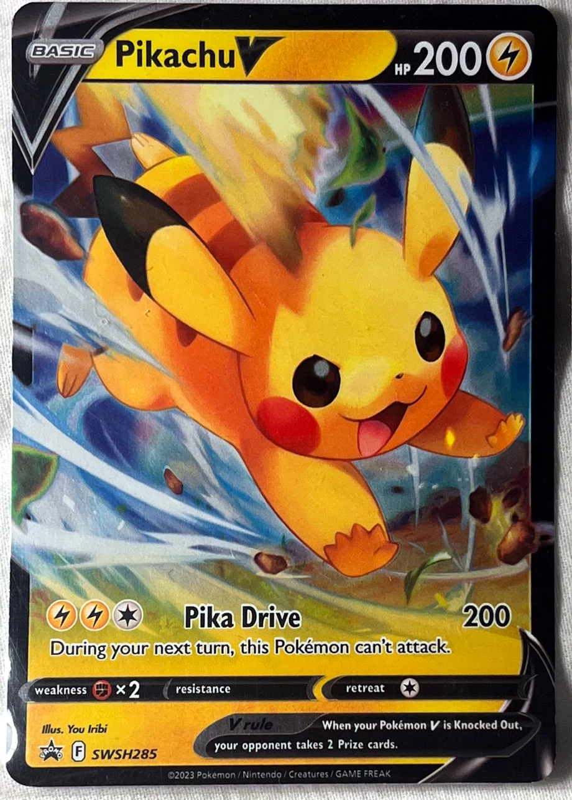
Kortscanneren der viser sit arbejde.
Gratis til iPhone og iPad. Scanning er uden grænse.
Dette er et rigtigt kort, scannet med appen. Det, der sker med det herunder, er det, appen gør med dine.
Bevæg musen. Folien følger med.
Du peger. Den tager billedet.
Hold et kort foran kameraet. Når det står skarpt og stille, tager CardCapture billedet og finder den præcise udgave, helt ned til sæt og nummer.
Og når et foto ikke rækker, siger den det.
Leder efter et kort
4,85 $Næsten perfekt
2,99 $ til 5,00 $ Markedspris Cardmarket + TCGplayer, 8. nov. 2026En pris, og hvor den kommer fra.
Markedspris
$48.00
Stand
Et kort har ikke én sand pris, så det lader CardCapture ikke som om. Den samler markedspriser til ét skøn og viser spændet, når de er uenige. Skift standen, og se hvad der rykker sig.
Tal for dette kort fra TCGplayer og Cardmarket den 8. november 2026. I appen holdes de opdateret, hvert med kilde og alder.
Se nærmere efter.
Forfalskninger er trykt anderledes. CardCapture ser på prikmønstret, blækket, typografien og hvordan folien bevæger sig. Træk glasset hen over kortet, og skift så trykket ud.
Hvert tjek fandt det, en trykpresse efterlader.
- RastermønsterRaster fundet ved omkring 150 linjer pr. tomme, som en offsetpresse laver.
- BlæktæthedTekstens blæk når L* 16 mod kortets eget hvide, en trykkerisort.
- Foilens opførselGlansen fejer hen over kortet og skifter farve.
- TypografiKortets navn er sat i 3,49 mm, den forventede størrelse.
Eksempler på aflæsninger med appens egne ord; kopien er simuleret. Et foto kan ikke bevise, at et kort er ægte, og det påstår appen aldrig.
Skub trykket. Se karakteren.
Fotografér forsiden og bagsiden. CardCapture måler centrering, hjørner, kanter og overflade og skønner, hvad kortet kan få, før du bruger penge på at sende det ind.
Holdes tilbage af
Bruger appens egen skala med ren bagside, kanter og overflade. Det er CardCaptures estimat, ikke en PSA- eller BGS-karakter. Kan billederne ikke bære det, bliver intet trukket. Tre graderinger er gratis.
En hel side. Ét billede.
Fotografér en side. Kortene bliver genkendt og prissat i læserækkefølge, og dem, den er i tvivl om, kommer øverst.
Rigtige kort og rigtige markedstal fra den 8. november 2026. To af dem var appen mindre sikker på. Hele sider er en del af Pro. Enkeltkort og bunker forbliver gratis.
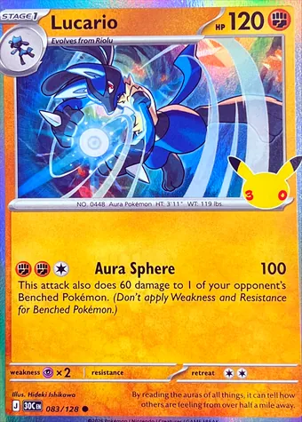
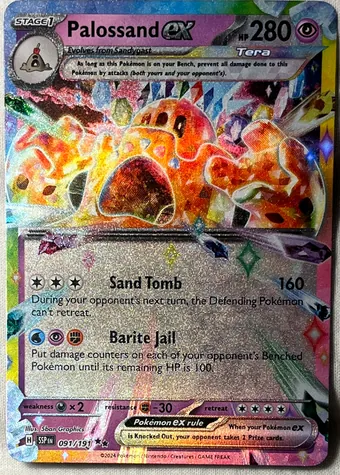
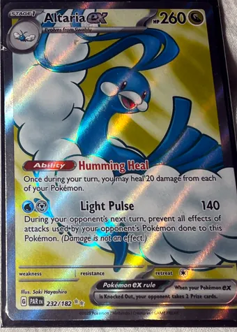
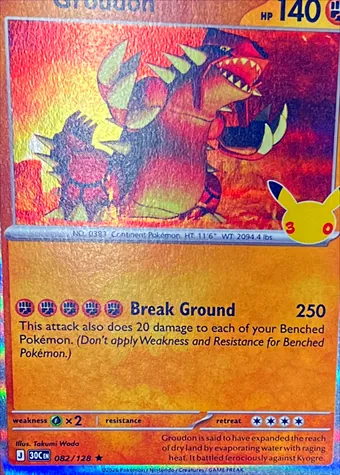
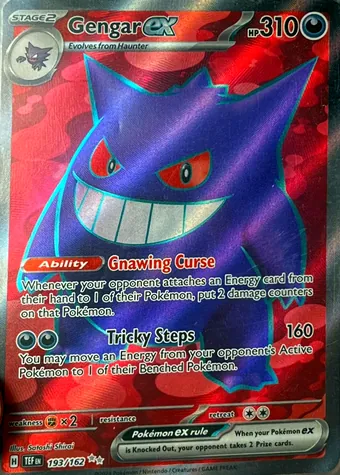
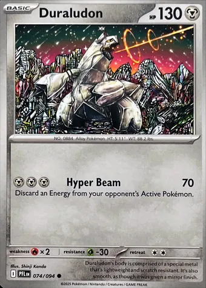
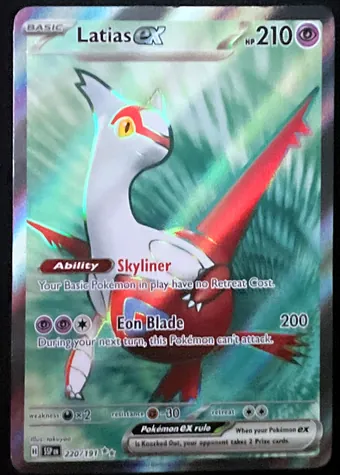
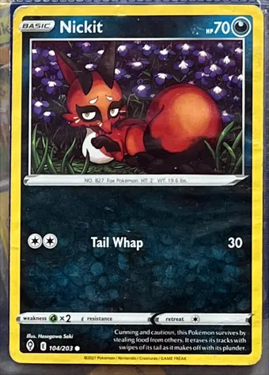
Femten sekunder.
Hele appen i ét klip. Skru op for lyden.
Og resten af den.
Læg en bunke
Lad kameraet køre, og læg kortene ét efter ét. Den fanger hvert kort af sig selv, uden at du trykker.
Graderede slabs
Læser etiketten på en slab fra PSA, CGC, Beckett, SGC eller TAG, karakter og certifikatnummer, og linker til graderens eget opslag.
Shop på eBay
Nye æsker, bundles, enkeltkort og slabs til den billigste Køb nu-annonce på netop det produkt, med fragt til dig. Annoncerne er eBays egne og åbner på eBay.
Byt ved bordet
Dine kort på den ene side, deres på den anden. Scan begge, og vægten viser, om byttet er fair: inden for 10 % begge veje, for priser er skøn.
Kortpas
Gem et korts stand, før det bliver sendt eller indsendt til gradering. Når det er tilbage, scanner du igen: Hvad har ændret sig, og passer centreringen stadig?
Dit år i kort
Årets fund, årets raket, din længste stime og dit yndlingssæt, samlet på ét kort, der er lavet til at blive delt.
Samling og indsigt
Dine kort med billeder og værdi, største stigninger og fald, sæt-komplethed og prisvarsler på dine egne kort.
Privat fra start
Ingen reklamer, ingen brugsstatistik, ingen sporing, og du behøver ingen konto. Din samling ligger på din telefon, og i din egen private iCloud, hvis du vil.
Det var en demo. Det her er appen.
Appens egne skærme, på rigtige kort.
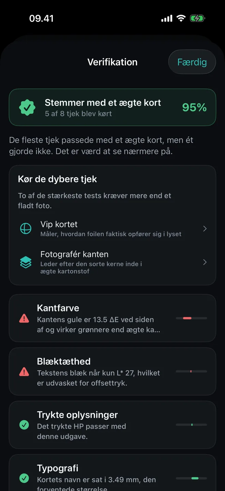
Hvert tjek, og hvad det fandt
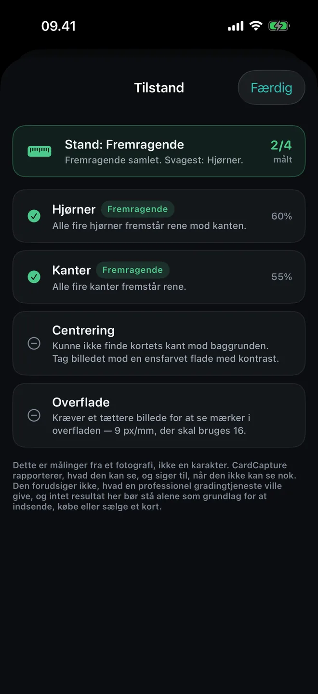
Også det, den ikke kunne måle
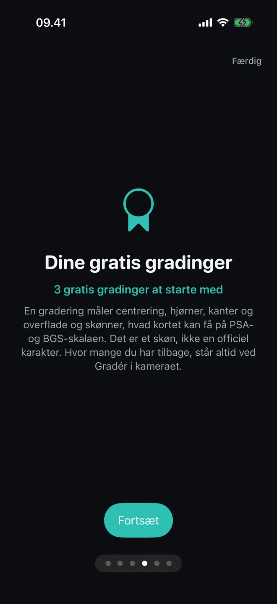
Tre graderinger at starte med
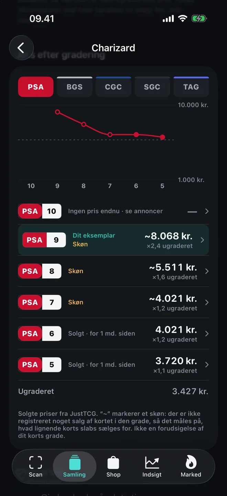
Hver karakter har en pris
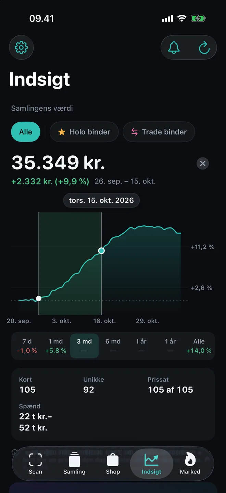
Hvad samlingen er værd
Ni spil. Pokémon på to sprog.
- Pokémon
- Magic: The Gathering
- Yu-Gi-Oh!
- One Piece
- Lorcana
- Digimon
- Dragon Ball Super
- Union Arena
- Gundam Card Game
Markedspriserne dækker Pokémon, Magic: The Gathering, Yu-Gi-Oh!, One Piece, Lorcana, Digimon, Dragon Ball og Union Arena. Hvor ingen kilde er pålidelig, som indtil videre for Gundam Card Game, siger appen det i stedet for at gætte, og ét tryk finder kortet til salg.
CardCapture er en uafhængig app og er ikke tilknyttet eller godkendt af kortudgiverne. Alle varemærker tilhører deres ejere.
Hvad det koster
Scanning er gratis. Betal for graderinger, mappesider og alle mellemregningerne, eller lad være.
Gratis
0 kr.
- Enkeltkort og bunker: scan så mange du vil, uden grænse
- Hver scanning med kortet, prisen og kilderne, tryktjekket og standen
- Tre graderinger, for- og bagside
- Samling, indsigt og prisvarsler
- Prishistorik for Magic og Lorcana er aldrig låst
CardCapture Pro
- 4,99 $om måneden
- 29,99 $om året · spar 49 %
- 79,99 $én gang · ingen fornyelse
Både månedlig og årlig starter med 14 dage gratis.
- En hel mappeside i ét billede
- Ubegrænsede graderinger
- Prishistorik for hvert kort
- Hver måling bag hvert tjek
- CSV-eksport
Graderinger, én ad gangen
Skal du kun bruge en gradering eller to? Én for 0,99 $, fem for 2,99 $. Én betaling, ingen fornyelse.
Ingen overraskelser
- Scanning har ingen tæller og ingen nedtælling.
- Du vælger selv, hvornår du bliver mindet om, at prøveperioden slutter.
- Kan billederne ikke bære en gradering, får du at vide, hvad du skal ændre, og intet bliver trukket.
- Opsig når som helst under Indstillinger › dit navn › Abonnementer. Din samling forbliver din.
Priserne er i amerikanske dollar; App Store viser prisen i din egen valuta. Én gratis prøveperiode pr. Apple-konto. Abonnementer fornyes automatisk, medmindre de opsiges mindst 24 timer før periodens udløb, og de administreres under din Apple-konto i Indstillinger.
Rimelige spørgsmål
Hvor præcise er priserne?
Så præcise som markederne bag dem, og den siger, hvor sikker den er. Et kort har ikke én sand pris, så CardCapture tager en vægtet median af markedstal, hvor faktiske salg og de nyeste tal vejer mest, og viser spændet, når markederne er uenige. Udbudspriser på eBay og Amazon vises som baggrund, men tæller aldrig med. For et kort i slab finder den ikke på en graderet pris, den linker til, hvad graderede eksemplarer faktisk er solgt for.
Kan den se, om et kort er falsk?
Ikke med sikkerhed. Et foto kan ikke bevise, at et kort er ægte, og CardCapture påstår det aldrig. Den tjekker trykket, som en ekspert ville, rasterprikker, blæk, skrift, hvordan folien bevæger sig, når du vipper kortet, og om de trykte detaljer passer til udgaven. Du får en vurdering i ord, en sandsynlighed når nok tjek har kørt, eller »Uafklaret« når de ikke har. En grund til at se nærmere efter, ikke et certifikat.
Er karakteren en rigtig PSA-karakter?
Nej. Det er CardCaptures eget estimat på en PSA-lignende og en BGS-lignende skala, ud fra billeder af for- og bagsiden. Kun et graderingsfirma kan give et kort en karakter. Brug det til at vælge, hvilke kort der er værd at sende ind. Kan billederne ikke bære et estimat, får du at vide, hvad du skal ændre, og intet bliver trukket.
Virker den uden internet?
Til scanning, ja. Til friske priser, nej. Genkendelse, tjek og målinger sker på din telefon; intet foto sendes nogen steder hen for at blive genkendt. Engelske Pokémon-kort genkendes helt uden forbindelse, fordi det katalog er bygget ind. De andre spil henter deres katalog én gang og virker derefter også uden net. Uden net viser et kort, du har prissat før, den seneste pris og hvor gammel den er.
Hvilke spil virker den med?
Pokémon (engelsk og japansk), Magic: The Gathering, Yu-Gi-Oh!, One Piece, Lorcana, Digimon, Dragon Ball Super (Fusion World), Union Arena og Gundam Card Game: alle bliver genkendt, tjekket og målt. Hvor ingen kilde er pålidelig, som indtil videre for Gundam Card Game, siger den det i stedet for at vise et opdigtet tal, og ét tryk finder kortet til salg.
Hvad koster den?
Det er gratis og uden grænse at scanne enkeltkort og bunker. Tre graderinger er gratis. Derefter køber du én for 0,99 $ eller fem for 2,99 $, eller du får CardCapture Pro til 4,99 $ om måneden, 29,99 $ om året eller 79,99 $ én gang. Pro giver ubegrænsede graderinger, hele mappesider, prishistorik, hver måling og CSV-eksport. Begge abonnementer starter med 14 dage gratis. Priserne er i amerikanske dollar; App Store viser din egen pris.
Sælger I mine data?
Nej, der er intet at sælge. CardCapture har ingen reklamer, ingen brugsstatistik og ingen sporing. Dens eneste server, et prisrelæ, sender opslag videre og gemmer intet om, hvem der spurgte. For at holde styr på de tre gratis graderinger bruger den Apples DeviceCheck, som intet siger om, hvem du er. Din samling ligger på din telefon og i din egen private iCloud, hvis du vil; ingen andre kan læse den, heller ikke os. Prisopslag nævner et kort, aldrig dig. I App Store er appen mærket med, at der ikke indsamles data.
Findes den til Android?
Ikke endnu. CardCapture er til iPhone og iPad med iOS 17 eller nyere.
Hvordan scanner jeg en hel mappe?
Én side ad gangen, med Pro. Sæt scanneren på Side, hold telefonen lige over siden, tjek antallet af kort i billedet, og tag billedet. Kortene bliver genkendt, prissat og listet i læserækkefølge, med dem, den er i tvivl om, øverst. Tilføj dem så alle. Enkeltkort og bunker forbliver gratis. Vil du have trykket tjekket, så scan kortet for sig.
Få styr på, hvad der er i din mappe.
Gratis til iPhone og iPad. Scanning er uden grænse.
Sidder du ved en computer? Ret telefonens kamera herhen.